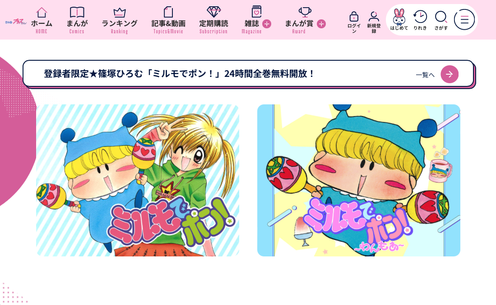
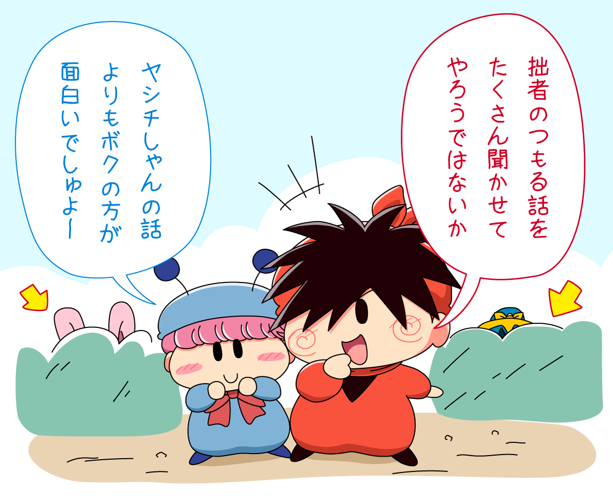

２０２４年５月６日に、篠塚ひろむ先生による描きおろし読み切り漫画『ミルモでポン！ 〜わんもあ〜』がちゃおプラスにて公開されました！！
リンク先にもあるとおり、ミルモ本編のその後が語られるのはなんとなんと１９年ぶりですよ！
まだ未チェックの方はちゃおプラスへ急ぐでしゅ〜〜〜っ＞＜
あらすじ（ちゃおプラスの公式ホームページより引用）
あたし、楓。恋の妖精・ミルモと暮らしてるの。
ミルモは恋をかなえる魔法を使えるんだけど、ヘソ曲がりで、なかなかお願いを聞いてくれないんだ。
ある日、ミルモのところに女の子の妖精・リルムが訪ねてきます。
ミルモが好きなリルムは、なんとあたしが片思いしている結木（ゆうき）くんの家に住みついて！？
以下はちゃおプラスの公式ホームページからの引用です。
ミルモでポン！の原作コミックスも１日限定で全巻無料開放されました！

以下は、〜わんもあ〜が公開される少し前にこやまるが描いたお絵描きです。

〜わんもあ〜では直接の描写はありませんでしたが、おそらく毎日のようにミルモをサポートしているんだろうなぁ。ミルモのサポートはあくまで建前で、本当はミルモやリルムと一緒にいたい２人・・という感じにミルモファンならいろんな妄想できちゃいますね。
楓が大学生ということで５年くらい経過していると思いますが、その間にいろんな出会いや別れもありそうでいろいろ気になってしまいます(^◇^;)
そして楓もずいぶんと立派な姿に・・（しみじみ）
このまま結木くんと結婚するのか、それとも新しい出来事が二人の前に現れるのか・・？
ミルモの原作も新しい動きがあったことで、２０２４年はますますミルモでポン！から目が離せませんね！
╭━━━━━━━━━━━━╮
— ちゃお編集部 (@ciao_manga) May 6, 2024
あの最終回の続きが読める
╰━━━━━ｖ━━━━━━╯
💚「ミルモでポン！〜わんもあ〜」#篠塚ひろむ
19年ぶりに続きが読める🪇🩷
月日が経ち大学生になった楓。
資格試験に奮闘中❣️
最近は忙しくて、ミルモに会ってない楓だけど...https://t.co/5L4G9wd5kH pic.twitter.com/F81J7veTzo
(2024/5/6)